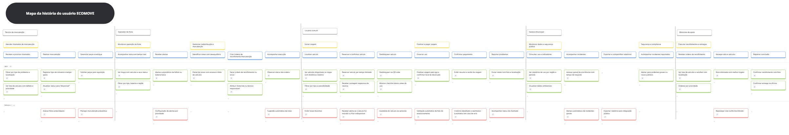

Requisitos de Software - USM

🗺️ User Story Mapping (USM)
⚪ Persona: Usuário do Serviço (Lucas)
🟡 Atividade: Iniciar viagem
| 🔵 Passo do Usuário | 🟢 Histórias (MVP) | 🔴 Histórias (Release 2 / Backlog) |
|---|---|---|
| Localizar veículo | Ver veículos próximos com distância e bateria Como usuário, quero ver no mapa os veículos próximos com distância e nível de bateria, para escolher rapidamente o mais adequado. 📌 O app exibe ícones de veículos no mapa, mostrando distância, tipo e porcentagem de bateria. Filtrar por tipo e acessibilidade Como usuário, quero filtrar os veículos por tipo e acessibilidade, para encontrar aquele que melhor atenda minhas necessidades. 📌 O usuário aplica filtros no mapa (tipo de veículo, autonomia mínima, acessibilidade). |
Salvar locais favoritos Como usuário, quero salvar locais favoritos, para encontrar veículos mais rapidamente nos pontos que costumo utilizar. 📌 O app permite marcar locais como favoritos (ex.: casa, trabalho, universidade) e mostra veículos próximos. |
🟡 Atividade: Iniciar viagem (Continuação)
| 🔵 Passo do Usuário | 🟢 Histórias (MVP) | 🔴 Histórias (Release 2 / Backlog) |
|---|---|---|
| Reservar e ir até o veículo | Reservar veículo por tempo limitado Como usuário, quero reservar o veículo por alguns minutos, para garantir que ele esteja disponível quando eu chegar até ele. 📌 O sistema bloqueia o veículo por tempo determinado (ex.: 5 minutos) e exibe contagem regressiva. Receber contagem regressiva da reserva Como usuário, quero visualizar uma contagem regressiva da reserva, para saber quanto tempo tenho. 📌 O app mostra o tempo restante em tela e envia aviso sonoro quando estiver próximo do fim. |
Receber alerta se o veículo reservado ficar indisponível Como usuário, quero ser avisado se o veículo reservado ficar indisponível, para poder escolher outro rapidamente. 📌 O app envia uma notificação push informando que o veículo foi cancelado e sugere alternativas próximas. |
| Desbloquear veículo | Desbloquear via QR code Como usuário, quero desbloquear o veículo via QR code, para iniciar minha viagem de forma rápida e segura. 📌 O app ativa a câmera e, após ler o código, envia solicitação de desbloqueio ao servidor. Checklist rápido de segurança Como usuário, quero visualizar um checklist de segurança antes de iniciar a viagem, para evitar problemas. 📌 O app mostra lista de verificação simples com pneus, freios e luzes. |
Autoteste do veículo via sensores Como usuário, quero que o sistema realize um autoteste automático do veículo, para garantir que ele esteja em boas condições. 📌 O sistema coleta dados de telemetria (freios, motor, sensores) e libera o uso apenas se estiver tudo ok. |
🟡 Atividade: Encerrar e pagar viagem
| 🔵 Passo do Usuário | 🟢 Histórias (MVP) | 🔴 Histórias (Release 2 / Backlog) |
|---|---|---|
| Encerrar uso | Finalizar viagem e confirmar devolução Como usuário, quero encerrar a viagem e confirmar a devolução, para encerrar a cobrança corretamente. 📌 O app encerra o trajeto e calcula automaticamente o valor com base no tempo e distância. |
Validação automática de estacionamento Como usuário, quero que o sistema valide automaticamente o local de devolução, para evitar multas. 📌 O app analisa a foto do local e verifica se o veículo foi deixado em área permitida. |
| Confirmar pagamento | Exibir resumo e recibo da viagem Como usuário, quero visualizar o resumo e recibo da viagem, para confirmar o valor cobrado. 📌 O app mostra tempo, distância, custo total e opção de enviar o recibo por e-mail. |
Histórico de viagens e reembolso Como usuário, quero acessar o histórico de viagens e solicitar reembolso em caso de erro, para garantir transparência. 📌 Tela com viagens anteriores e botão para abrir solicitação de reembolso. |
| Reportar problemas | Reportar defeito com foto e localização Como usuário, quero reportar defeitos com foto e localização, para contribuir com a manutenção da frota. 📌 O app gera automaticamente um ticket para o operador, com data, hora, foto e localização. |
Acompanhar status do chamado Como usuário, quero acompanhar o andamento do meu chamado, para saber quando o problema foi resolvido. 📌 A tela de suporte mostra o status do chamado (aberto, em andamento, resolvido). |
⚪ Persona: Operador de Frota (Carlos)
🟡 Atividade: Monitorar operação da frota
| 🔵 Passo do Usuário | 🟢 Histórias (MVP) | 🔴 Histórias (Release 2 / Backlog) |
|---|---|---|
| Acompanhar status em tempo real | Ver mapa com veículos e status Como operador, quero visualizar no mapa todos os veículos e seus status, para acompanhar a operação em tempo real. 📌 O painel mostra ícones coloridos com status: disponível, em uso, em manutenção, bateria baixa. Filtrar por tipo, bateria e região Como operador, quero filtrar veículos por tipo, bateria e região, para localizar rapidamente os que precisam de atenção. 📌 O painel possui filtros dinâmicos por tipo de veículo, status e área geográfica. |
|
| Receber alertas | Alertas de falhas e bateria baixa Como operador, quero receber alertas automáticos de falhas e bateria baixa, para agir com rapidez. 📌 Notificações são geradas automaticamente no painel e por e-mail. |
Configurar tipos de alerta Como operador, quero configurar os tipos de alerta que recebo, para evitar excesso de notificações. 📌 O painel permite selecionar categorias de alerta e limites personalizados. |
🟡 Atividade: Gerenciar redistribuição e manutenção
| 🔵 Passo do Usuário | 🟢 Histórias (MVP) | 🔴 Histórias (Release 2 / Backlog) |
|---|---|---|
| Identificar áreas com desequilíbrio | Painel de zonas com excesso/falta de veículos Como operador, quero visualizar zonas com excesso ou falta de veículos, para equilibrar a frota. 📌 O mapa apresenta zonas coloridas indicando a densidade da frota em cada região. |
|
| Criar ordens de recolhimento/envio | Criar ordens de recolhimento/envio Como operador, quero criar ordens de recolhimento e envio de veículos, para redistribuir conforme a demanda. 📌 O sistema permite criar ordens, definir origem, destino e motorista responsável. |
|
| Acompanhar execução das ordens | Acompanhar execução das ordens Como operador, quero acompanhar o status das ordens, para garantir o cumprimento das redistribuições. 📌 Painel mostra status: pendente, em rota, concluída, com atualização em tempo real. |
Sugestões automáticas de rota Como operador, quero receber sugestões automáticas de rota, para otimizar deslocamentos e reduzir custos. 📌 O sistema recomenda trajetos otimizados com base no trânsito e distância. |
⚪ Persona: Técnica de Manutenção (Marina)
🟡 Atividade: Atender chamados de manutenção
| 🔵 Passo do Usuário | 🟢 Histórias (MVP) | 🔴 Histórias (Release 2 / Backlog) |
|---|---|---|
| Receber e priorizar chamados | Ver lista de veículos com defeito e prioridade Como técnica, quero visualizar chamados por ordem de prioridade, para atender primeiro os mais críticos. 📌 O painel lista veículos com defeito classificados por gravidade e tempo desde o reporte. Filtrar por tipo de problema e localização Como técnica, quero filtrar os chamados por tipo de problema e localização, para otimizar meu deslocamento. 📌 O painel permite aplicar filtros como tipo de falha e bairro. |
|
| Realizar manutenção | Registrar tipo de conserto e tempo gasto Como técnica, quero registrar o tipo de conserto e o tempo gasto, para manter o histórico de manutenção. 📌 Formulário com campos de tipo de reparo, peças utilizadas e duração. Atualizar status para “disponível” Como técnica, quero atualizar o status do veículo para “disponível”, para devolvê-lo à frota. 📌 O status muda no painel geral e o veículo reaparece no mapa do operador. |
Anexar fotos antes/depois Como técnica, quero anexar fotos antes e depois do reparo, para comprovar o serviço realizado. 📌 Upload de imagens direto no ticket de manutenção. |
| Gerenciar peças e estoque | Solicitar peças para reposição Como técnica, quero solicitar peças quando necessário, para que o trabalho não seja interrompido. 📌 O sistema gera automaticamente uma solicitação para o estoque. |
Planejar manutenção preventiva Como técnica, quero planejar manutenções preventivas com base no uso dos veículos, para reduzir falhas futuras. 📌 O sistema sugere revisões programadas conforme quilometragem e tempo de uso. |
⚪ Persona: Motorista de Apoio (Rogério)
🟡 Atividade: Executar recolhimentos e entregas
| 🔵 Passo do Usuário | 🟢 Histórias (MVP) | 🔴 Histórias (Release 2 / Backlog) |
|---|---|---|
| Receber ordens de recolhimento | Ver lista de veículos e destinos Como motorista, quero ver a lista de veículos e destinos, para organizar meu roteiro. 📌 O app mostra ordens com endereços, prioridade e tipo de veículo. |
|
| Navegar até os veículos | Navegar com rota otimizada Como motorista, quero navegar com rota otimizada, para economizar tempo e combustível. 📌 O app gera sequência ideal considerando trânsito e distância. |
Replanejar rota conforme trânsito Como motorista, quero replanejar minha rota em caso de congestionamento, para evitar atrasos. 📌 O sistema recalcula o trajeto em tempo real conforme o trânsito. |
| Registrar conclusão | Confirmar recolhimento com foto Como motorista, quero confirmar recolhimento com foto, para comprovar o serviço. 📌 O app solicita foto no local antes de atualizar o status. Confirmar entrega na oficina Como motorista, quero confirmar a entrega na oficina, para encerrar a ordem. 📌 Após a entrega, o status do veículo muda para “em manutenção”. |
⚪ Persona: Gestora Municipal (Fernanda)
🟡 Atividade: Monitorar dados e segurança pública
| 🔵 Passo do Usuário | 🟢 Histórias (MVP) | 🔴 Histórias (Release 2 / Backlog) |
|---|---|---|
| Consultar uso e indicadores | Ver relatórios de uso por região e período Como gestora, quero visualizar relatórios de uso por região e horário, para compreender padrões de mobilidade urbana. 📌 Painel mostra volume de viagens, veículos ativos e regiões mais utilizadas. Ver indicadores ambientais e de segurança Como gestora, quero ver indicadores ambientais e de segurança, para avaliar o impacto do serviço. 📌 Exibe gráficos de CO₂ evitado, incidentes e tempo médio de resposta. |
Exportar relatórios padronizados Como gestora, quero exportar relatórios padronizados, para compartilhar com órgãos públicos. 📌 Permite exportar relatórios em PDF e CSV conforme modelo institucional. |
| Acompanhar incidentes | Receber alertas de incidentes graves Como gestora, quero receber alertas automáticos de incidentes graves, para agir rapidamente. 📌 O sistema envia notificações em caso de falhas ou acidentes. |